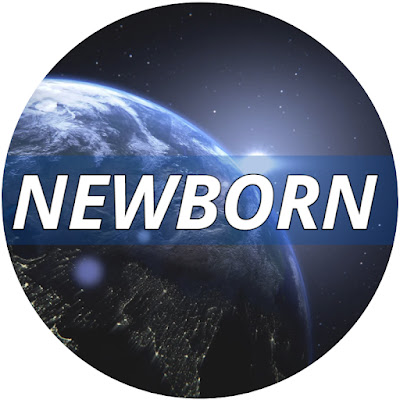
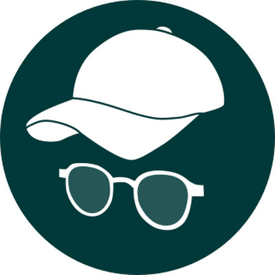

Rozwój osobisty
Prowadzę dwa kanały na YouTube. Oba wyrastają z tego samego przekonania: zmiana zaczyna się od zaprojektowania wizji, a utrwala się dzięki nawykom.
Kanały
-

NEWBORN
YouTube · @NEWBORN-25Kanał o odkrywaniu życiowej wizji: jak odnaleźć własną tożsamość, sens życia i kierunek, który daje siłę do trwałej zmiany. Opowiadamy nie tylko o narzędziach, ale też o drodze, którą sami przeszliśmy.
Warsztaty
- odkrywanie kim jesteś i czego naprawdę chcesz
- formułowanie wizji życia za pomocą konkretnych narzędzi
- podążanie własną drogą w życiu w sposób proaktywny
-

Życie Poziom Wyżej
YouTube · @ZyciePoziomWyzejKanał o praktycznej stronie rozwoju: nawykach, organizacji czasu i małych krokach, które z czasem składają się na duże zmiany w codziennym życiu. Konkretne i rzeczowe materiały dydaktyczne.
Omawiane tematy
- proste nawyki, które możesz wdrożyć od razu
- planowanie oparte na priorytetach, a nie na tym, co pilne
- motywacja, która wynika z wartości, a nie z chwilowego zapału
Na czym się opieram
Treści na obu kanałach bazują na dwóch książkach, do których regularnie wracam.
-
Człowiek w poszukiwaniu sensu
Frankl, psychiatra i więzień obozów koncentracyjnych, pokazuje, że człowiek zniesie niemal wszystko, jeśli wie, po co żyje. Biorę z tej książki przekonanie, że sens jest fundamentem każdej trwałej zmiany i że zawsze mamy wolność wyboru własnej postawy.
-
7 nawyków skutecznego działania
Covey opisuje skuteczność jako drogę od zależności, przez niezależność, do współpracy z innymi. Biorę z tej książki konkretne narzędzia: proaktywność, zaczynanie od wizji końca i stawianie na pierwszym miejscu tego, co najważniejsze.